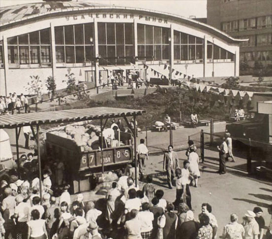
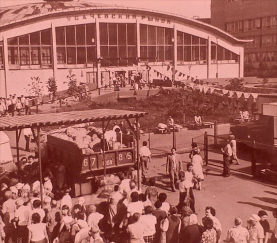
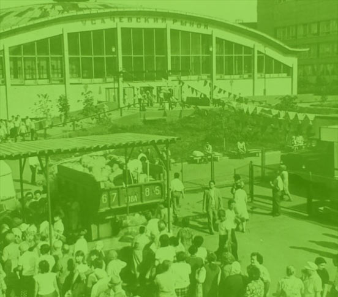

История
Рынка




Усачевский рынок один
из старейших в Москве.
Он был открыт в районе Хамовники еще до войны.
Он был открыт в районе Хамовники еще до войны.
Появление первых торговых рядов в районе Хамовники произошло еще до войны.
Усачевский рынок один
из старейших в Москве.
Появление первых торговых рядов в районе Хамовники произошло еще до войны. Москвичи покупали там хлеб, рыбу и разные вкусности.
Он был открыт в районе Хамовники еще до войны.
Появление первых торговых рядов в районе Хамовники произошло еще до войны.
Усачевский рынок один!
Появление первых торговых рядов в районе Хамовники произошло еще до войны.
В 2016 году старейший московский рынок переживает второе рождение.
Из почти забытого и устаревшего, "Усачевский" на глазах превращается в красивый, современный, удобный и любимый городской рынок. Уникальная реконструкция фасада сиспользованием старинного кирпича, отделка внутреннего интерьера в экостиле, концептуальное зонирование, продукция подмосковных и региональных фермерских хозяйств, фудкорты от лучших столичныхрестораторов, гастрономические фестивали, мастер-классы и мероприятия привлекают самую широкую аудиторию и делают Усачевский рынок не только популярным торговым центром, но и значимым социальным и туристическим объектом, украшением исторического района Хамовники.